Moorman Properties · 20 buildings
Queen Anne
Twenty buildings on the hill, from the top of Queen Anne Avenue to the south slope above Seattle Center.
Available in Queen Anne
As listed November 20, 2026.
-
 Available Dec 7
$1,950 a month
1 bed · 1 bath · 625 sq ft
1020 5th Ave N, Unit 20
Available Dec 7
$1,950 a month
1 bed · 1 bath · 625 sq ft
1020 5th Ave N, Unit 20
Queen Anne, Seattle 98109 View and apply ↗ -
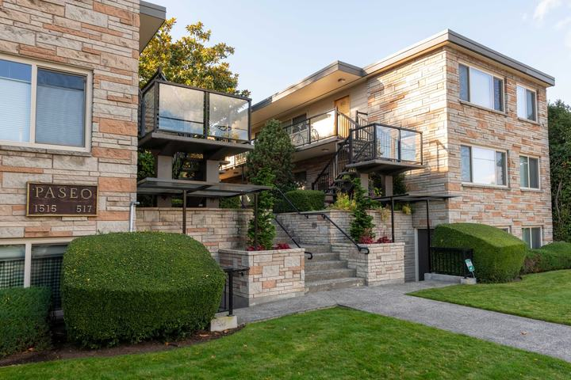
Available Dec 1 $3,095 a month 2 bed · 1 bath · 825 sq ft 1515 6th Ave W, Unit 202
Queen Anne, Seattle 98119 View and apply ↗ -
 Available now
$2,895 a month
2 bed · 2 bath · 1,005 sq ft
465 Garfield St Unit 4A
Available now
$2,895 a month
2 bed · 2 bath · 1,005 sq ft
465 Garfield St Unit 4A
Queen Anne, Seattle 98109 View and apply ↗ -
 Available now
$3,295 a month
3 bed · 1 bath · 1,050 sq ft
1515 6th Ave W, Unit 205
Available now
$3,295 a month
3 bed · 1 bath · 1,050 sq ft
1515 6th Ave W, Unit 205
Queen Anne, Seattle 98119 View and apply ↗ -
 Available now
$2,395 a month
1 bed · 1 bath · 675 sq ft
52 W Etruria St Unit 201
Available now
$2,395 a month
1 bed · 1 bath · 675 sq ft
52 W Etruria St Unit 201
Queen Anne, Seattle 98119 View and apply ↗ -
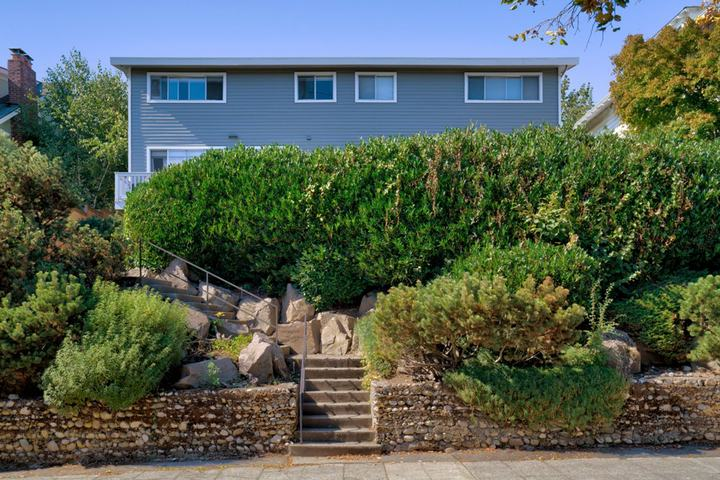
Available now $3,495 a month 3 bed · 1.5 bath · 1,700 sq ft 1819 3rd Avenue West Unit 1
Queen Anne, Seattle 98119 View and apply ↗ -
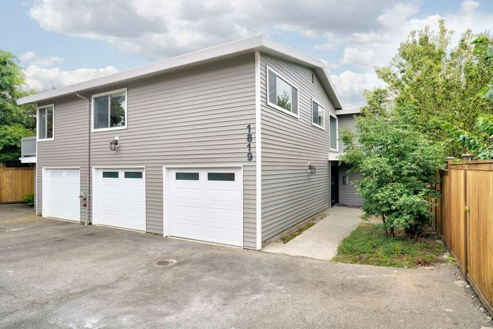
Available Dec 10 $400 a month Garage space 1819 3rd Avenue West, Garage 3
Queen Anne, Seattle 98119 View and apply ↗ -
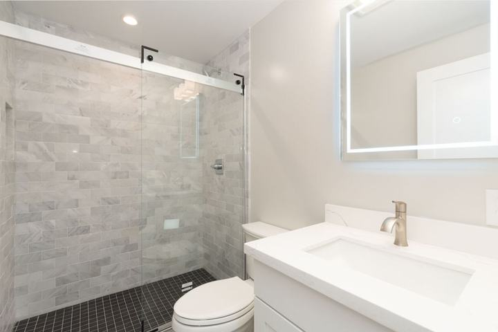
Available now $2,695 a month 2 bed · 1 bath · 800 sq ft 1920 5th Avenue North Unit 102
Queen Anne, Seattle 98109 View and apply ↗
The Buildings
Nothing open in the one you like? Call us and ask what is coming up.

Bostonian Apartments
Built 1904A well-kept 1904 building at the northeast top corner of Queen Anne Hill. Bus lines and a central location make downtown Seattle an easy trip, with quick access to I-5 and Highway 99. Several parks, restaurants, groceries and coffee shops are within walking distance.

Mary Lew Apartments
A brick building with more old-world charm than we can list. The Mary Lew sits at the top of Queen Anne’s south-facing slope, with views of downtown and the Space Needle. Units keep their original hardwood floors, and the shops and restaurants of Queen Anne are minutes away.
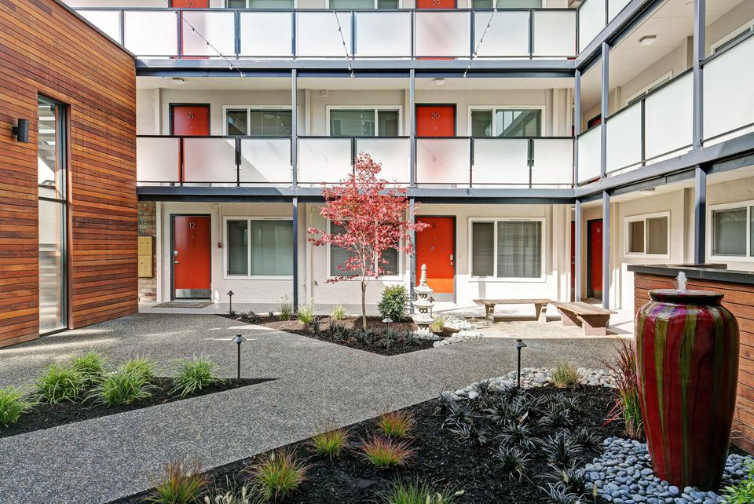
Aqua Terrace Apartments
Built 1959Built in 1959 on the south slope of Queen Anne, with views of the Space Needle and downtown Seattle. Some units have decks and face directly south; some have newly renovated bathrooms and kitchens. Seattle Center, Pacific Northwest Ballet, shops and restaurants are within walking distance.
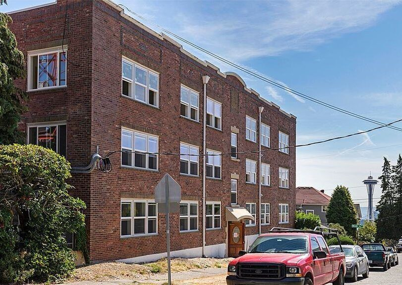
Tower Apartments
Built 1931An immaculately maintained 1931 brick building in one of Queen Anne’s most desirable areas. Units have been fully remodeled with modern amenities while keeping the building’s character, and south-facing windows look over the city. Parking and storage units available.
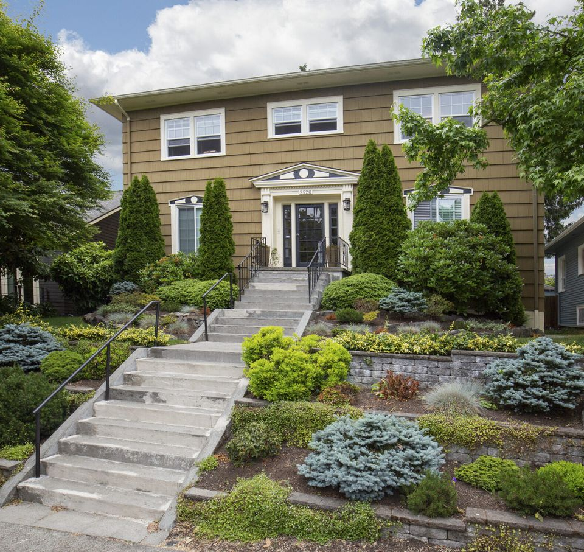
The Sherné Apartments
Built in the 1920sA 1920s building on a hillside terraced with native plants. Hardwood floors, high ceilings and crown molding in the living rooms, with updated tile in kitchens and baths. On the north side of Queen Anne Avenue, a minute’s walk from restaurants, parks, boutiques and buses to downtown.

Kathwynn Apartment
Built 1947In Lower Queen Anne’s Uptown neighborhood. Units in this 1947 mid-century building have hardwood floors, central gas heat and views of the Space Needle and downtown. Boutique shops, restaurants, grocery stores and nightlife are a few blocks away.

McKean Apartments
A vintage brick building in one of Queen Anne’s most desirable areas, with recently upgraded units, regionally inspired landscaping and sweeping views of the Sound.

Terrace View
Built 19071907 buildings at the top of the west side of Queen Anne Hill, in a quiet residential area with easy access to bus lines and local shops. Downtown is a direct trip by bus or car, the main Queen Anne business district is minutes away, and parks are within walking distance.

Queen Anne Fiveplex
Built 1959A 1959 building on the southeast side of Queen Anne Hill, overlooking Lake Union. Close to bus lines, I-5 and Highway 99, with Seattle Center, shops and restaurants nearby.
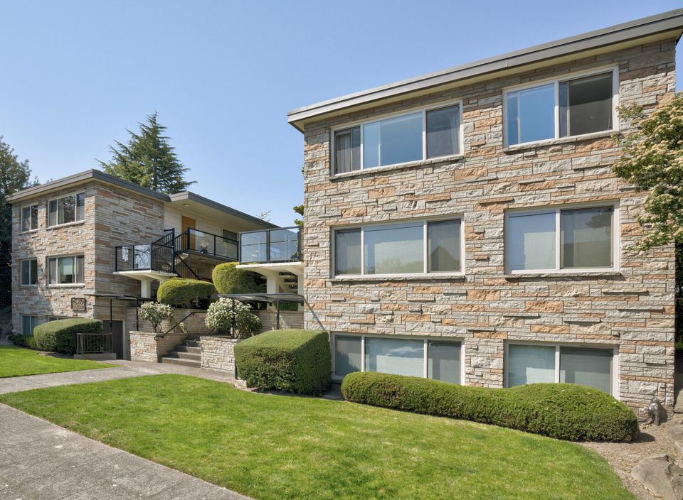
Paseo Apartments
Built 1959Built in 1959 on top of Queen Anne. Close to bus lines, I-5 and Highway 99, with an easy trip downtown. Parks, restaurants, groceries and coffee shops are within walking distance.
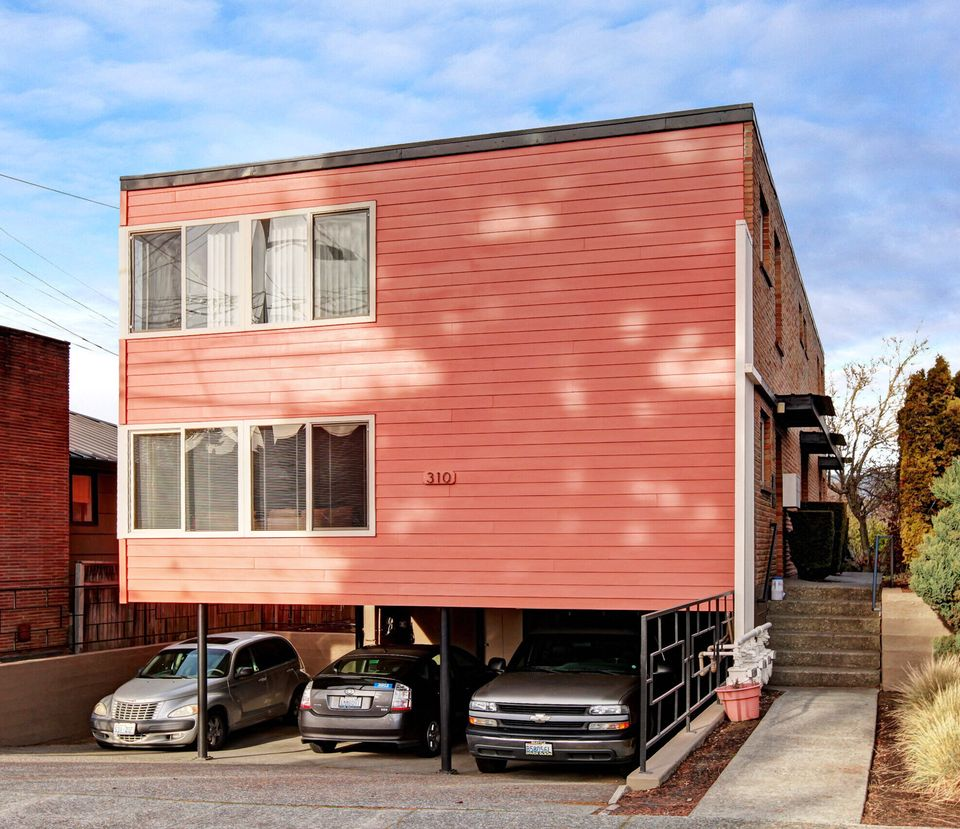
Bostonianito
Built 1958A small 1958 building at the top of Queen Anne Hill, close to shops and restaurants. Units have plenty of windows for natural light, with original hardwood floors and carpet. Walking distance to Queen Anne Avenue, groceries and restaurants. Renter’s insurance required.
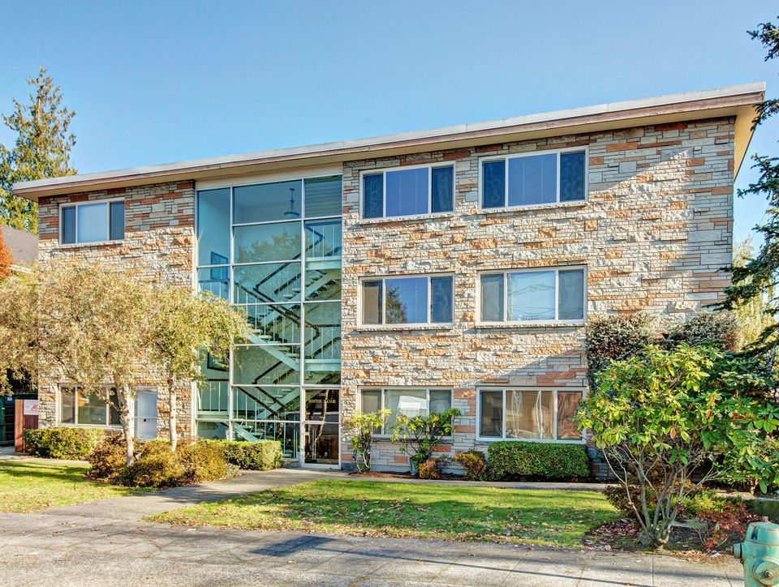
Boston Manor
Built 1959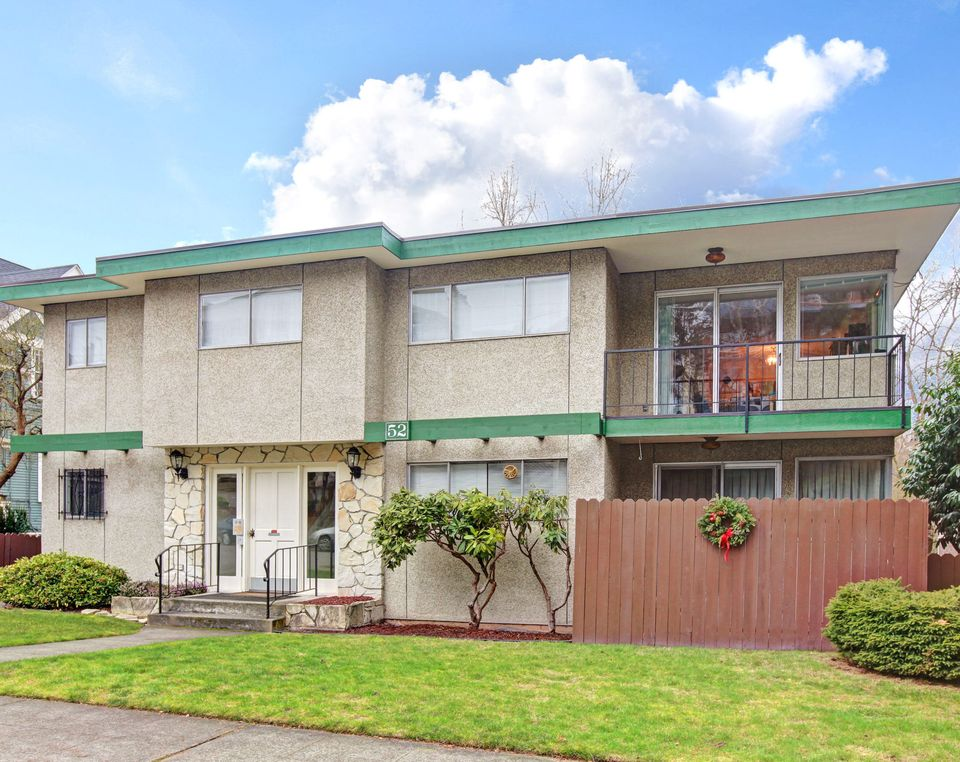
West Etruria Apartments
Built 1967On the north slope of Queen Anne Hill, between the Fremont Bridge and Seattle Pacific University. Nearby bus lines run to downtown, Fremont, the Queen Anne business district and the University of Washington. Parks, shopping and restaurants are within walking distance.

Florentia Apartments
On Florentia Street, on the north side of Queen Anne Hill. Close to bus lines with easy access to downtown. Several parks are within walking distance, along with restaurants, grocery stores and coffee shops.
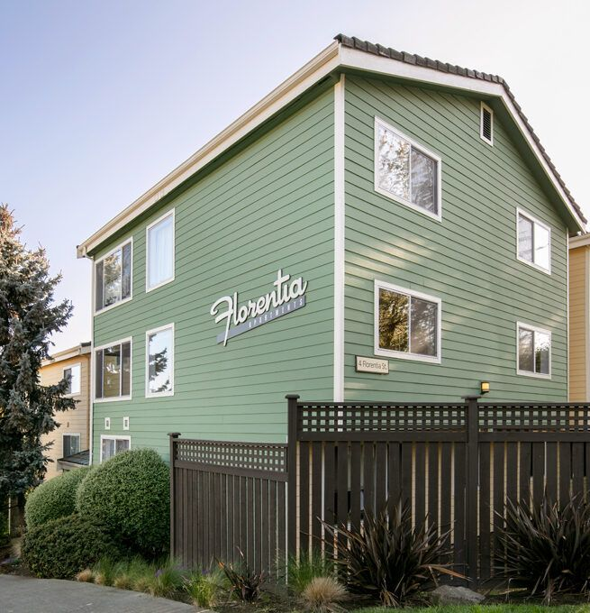
Florentia Court Apartments

Engine House
Units have original and new tile work, hardwood floors, energy-efficient double-paned windows and ample storage. At the top of Queen Anne Hill, close to shopping, schools and the library.

Park View Triplex
Queen Anne Triplex
Built 1961A 1961 building at the northwest corner of Queen Anne Hill, within blocks of the Ballard Bridge, restaurants and grocery stores. Easy access to both Queen Anne and Ballard shopping, with Seattle Pacific University close by.
Forrest Manor Apartments
A restored mid-century building in the heart of Queen Anne, renovated from top to bottom: new windows, flooring, kitchens, bathrooms, appliances and decks. Apartments have spacious living areas, high ceilings and large windows, with stainless steel appliances, quartz countertops and marble tile. Kerry Park, Seattle Center and the Space Needle are within walking distance.
Also in Queen Anne
- Cascadian View Apartments
Call or email us for details and what is coming up.